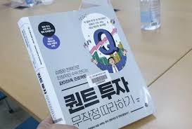
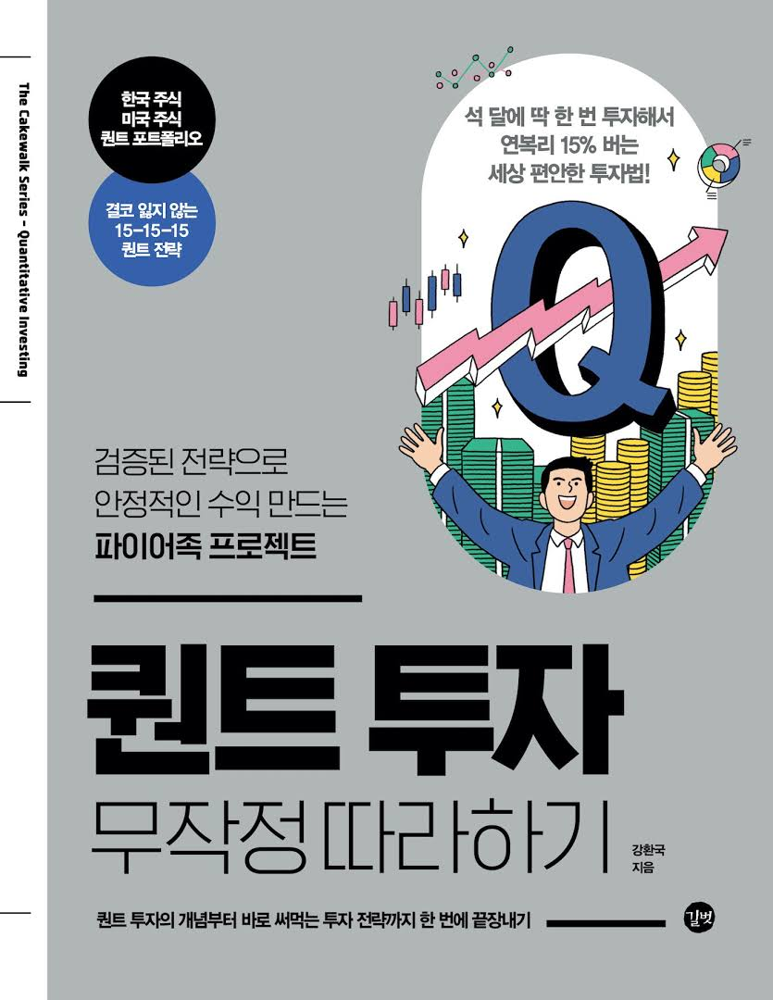
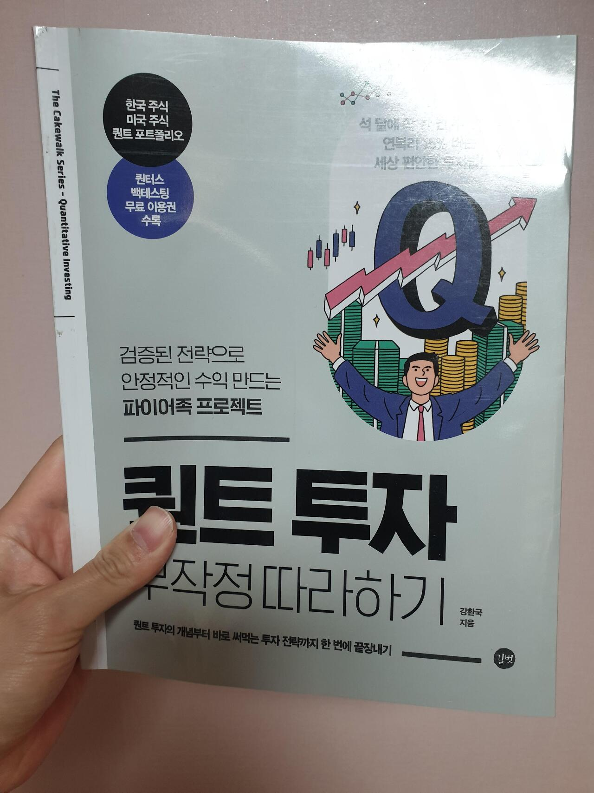

투자도서 1000권 무료 증정
안녕하세요. 먼저, 여러분의 지지와 관심에 진심으로 감사드립니다. 여러분의 성원에 보답하고자 투자서적 1,000권을 무료로 드립니다. 이 이벤트는 완전히 무료이며 시간이 제한되어 있습니다. band을 추가하고 “7”이라고 답장하시면 오전 8시에 제 매니저가 메시지에 답장을 드리며, 발신순서에 따라 순서대로 메시지를 받게 되오니, 채팅방내에서 인내심을 갖고 기다려 주시기 바랍니다. 채팅방에서는 이번 주말 11월 급등한 제가 강력 추천하는 종목 몇 가지를 공유해드리며, 투자 전략, 경험 공유, 시장 동향 등을 함께 이야기 나눌수 있습니다. 이벤트 기간이 한정되어 있으니, 서둘러 참여하셔서 책을 받아가시기 바랍니다. 마지막으로, 지난 몇 년간 보내주신 성원에 다시 한번 감사드리며, 채팅방에서 뵙기를 기대하겠습니다。
⚠️책은 선착순 1,000명에게만 제공됩니다. 지금 바로 무료로 받으려면 버튼을 클릭하세요.
  
추천사
프롤로그
준비마당 - 퀀트 투자에 앞서서
001 퀀트 투자가 뭐예요?
- 퀀트 투자, 대체 뭔가요?
002 왜 퀀트 투자인가?
- 첫 번째, 배우기 쉽습니다
- 두 번째, 가성비가 좋습니다
- 세 번째, 전략의 검증이 가능합니다
- 네 번쨰, 심리의 영향을 덜 받습니다
003 투자 심리
- 1. 투자 전 편향
- 2. 투자 후 편향
[투자이야기] 김 대리, 그동안 투자를 망친 이유를 배우다
004 퀀트 투자의 목표
- 첫 번째, MDD를 20% 이하로 제한하기
- 두 번째, 만족할 만한 수익 내기
[투자이야기] 낙원계산기를 활용해 파이어 필요 자금을 계산해 보자
005 퀀트 투자에 쓰는 소프트웨어
- 1. 투자 아이디어 찾기
- 2. 투자 전략 수립
- 3. 검증 단계(백테스트)
- 4. 종목 찾기
첫째마당 - 자산배분으로 손실 최소화
006 투자로 돈 버는 3가지 방법
- 1. 자산배분
- 2. 마켓타이밍
- 3. 종목선정
- 이 책의 목표
007 자산배분은 왜 할까?
- 1. MDD를 20% 이하로 낮추기 위해
- 2. 우리는 미래를 예측할 수 없다
- 3. 투자 환경이 나빠지고 경제 위기가 와도 안전하다
[투자이야기] 종목 찾기보다 자산배분이 먼저라고요?
008 자산배분의 첫 번째 핵심: 장기적으로 우상향하는 자산군 매수
009 자산배분의 두 번째 핵심: 상관성이 낮은 자산군에 투자
- 경제에도 사계절이 있다
- 자산배분 전략 1: 영구 포트폴리오
[무따기] 자산배분 리밸런싱 따라하기
010 자산배분의 세 번째 핵심: 자산군별 변동성 비슷하게 유지
011 한국형 올웨더
- 자산배분 전략 2: 한국형 올웨더
012 퇴직연금용 한국형 올웨더 만들기
- 퇴직연금 계좌에서 한국형 올웨더 만들기
- 국내 상장 ETF vs. 미국 상장 ETF 비교
- 자산배분 전략 3: 올시즌 포트폴리오
둘째마당 - 마켓타이밍
013 마켓타이밍은 무엇인가?
- 1. 가격을 사용한 마켓타이밍
- 2. 계절성을 사용한 마켓타이밍
- 3. 경제지표를 사용한 마켓타이밍
- 4. 밸류에이션을 사용한 마켓타이밍
- 5. 기타 전략
014 핼러윈 전략은 무엇인가?
[투자이야기] 주식시장은 11~4월은 천국, 5~10월은 지옥?
015 한국과 미국 시장에서의 핼러윈 전략
016 한국형 올웨더와 핼러윈 전략의 결합
017 핼러윈 전략이 통하는 원인
셋째마당 - 한국 주식 종목선정
018 어떤 주식을 사야 하는가?
[투자이야기] 가치주, 성장주, 성장가치주… 어떻게 다르고 어떻게 구분하죠?
019 기초 회계 - 손익계산서
- 1. 매출액
- 2. 매출총이익
- 3. 영업이익
- 4. 순이익
020 기초 회계 - 재무상태표
021 기초 회계 - 현금흐름표
022 개별주 퀀트 투자 큰 그림 그리기
[무따기] 주가지수보다 더 수익이 높은 지표 찾기(백테스팅)
023 소형주의 마법
- 1. 한국은 소형주의 수익이 대형주보다 훨씬 높다
- 2. 대부분의 퀀트 지표는 소형주에서 초과수익이 더 높다
[무따기] 퀀터스를 이용한 10분위 계산법
024 한국 가치주 지표
025 PSR로 가치주 찾기
026 PGPR로 가치주 찾기
027 POR로 가치주 찾기
028 PER로 가치주 찾기
029 이런 가치주 지표도 있어요! PAR, PBR, PCR, PFCR, PLR, PRR, 주주수익률
030 무작정 따라하기 가치주 전략
- 1. 전체 주식
[무따기] 무작정 따라하기 가치주 전략
- 2. 대형주
- 3. 소형주
031 기타 가치주 전략
- 1. 강환국 슈퍼 가치전략
- 2. 벤저민 그레이엄 가치전략
- 3. 켄 피셔 가치전략
- 4. 벤저민 그레이엄+켄피셔 가치전략
032 한국 성장주 지표
033 매출성장률로 성장주 찾기
034 매출총이익성장률로 성장주 찾기
035 영업이익성장률로 성장주 찾기
036 순이익성장률로 성장주 찾기
037 무작정 따라하기 성장주 전략
[무따기] 무작정 따라하기 가치주 전략
- 1. 전체 주식
- 2. 대형주
- 3. 소형주
038 무작정 따라하기 성장가치주 전략
- 1. 전체 주식
[무따기] 무작정 따라하기 성장가치주 전략
- 2. 대형주
- 3. 소형주
039 한국 개별 주식 포트폴리오
넷째마당 - 미국 주식 종목선정
040 한국과 미국 개별 주식 퀀트 투자의 차이점
041 소형주 전략, 미국에서도 통할까?
[투자이야기] 미국 퀀트 투자, 한국과 똑같이 할 수 있나?
042 미국 가치주 지표 분석
043 무작정 따라하기 미국 가치주 전략
[무따기] 무작정 따라하기 미국 가치주 전략
044 강환국 슈퍼가치전략, 벤자민 그레이엄 전략, 켄 피셔 전략도 미국에서 통하나?
- 1. 강환국 슈퍼 미국 가치전략
- 2. 벤저민 그레이엄 미국 가치전략
- 3. 켄 피셔 미국 가치전략
045 미국 성장주 지표 분석
046 무작정 따라하기 미국 성장주 전략
[무따기] 무작정 따라하기 미국 성장주 전략
047 무작정 따라하기 미국 성장가치주 전략
[무따기] 무작정 따라하기 미국 성장가치주 전략
048 미국 주식 포트폴리오
다섯째 마당 - 무작정 따라하기 퀀트 포트폴리오
049 한국형 올웨더, 핼러윈 전략과 한국, 미국 개별주 퀀트 투자의 결합
- 무작정 따라하기 최종 포트폴리오
050 퀀트 투자, 이 쉬운 것을 왜 안 할까?
- 1. 퀀트 투자도 수익이 저조한 구간이 있다
- 2. 스토리가 없다
- 3. 듣도 보도 못한 소형주를 사게 된다
- 4. 투자 과정이 지루하다
- 5. 투자가 이렇게 쉬울 리가 없어!
[투자이야기] 김 대리, 파이어에 도달하다